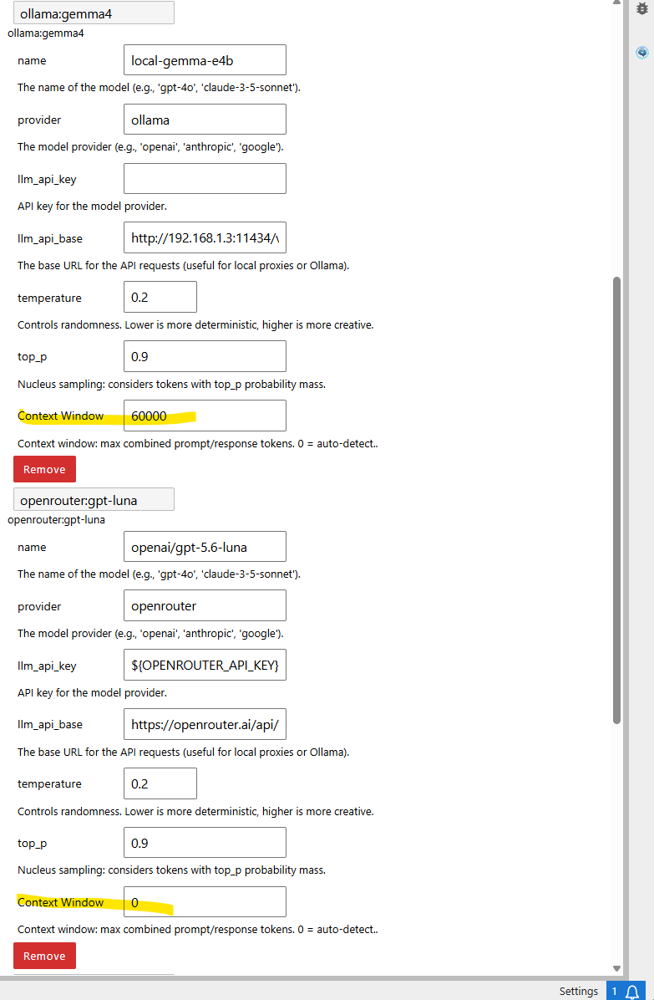
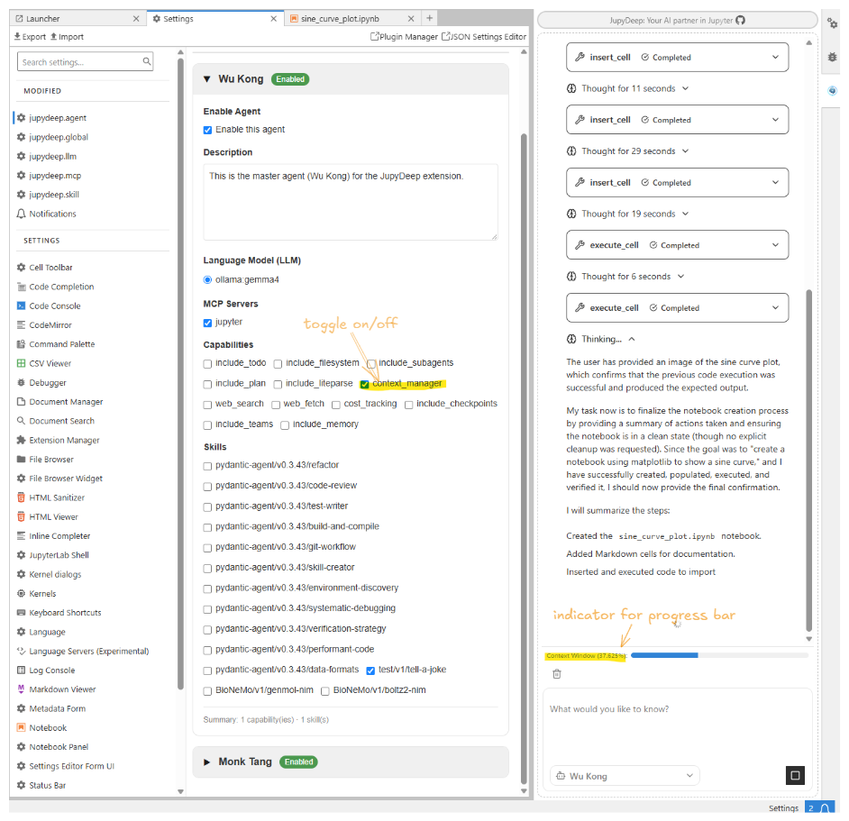

How to config context window
Most Large Language Models (LLMs) operate within a maximum context window size—a limit on the total number of combined prompt and response tokens the model can process at once. Depending on the model, this threshold can range from a few thousand to millions of tokens.
In long-running conversations or iterative agent workflows, token consumption accumulates rapidly. If the context window fills up, the agent may encounter errors, lose prior state, or drop critical memory.
To address this seamlessly, JupyDeep allows you to configure the context window size according to the specific characteristics and limits of your underlying LLM.
1. Key Benefits
Prevents Overflow Errors: Automatically tracks token usage so long conversations don't exceed model limits.
Smart Summarization: Works alongside JupyDeep's context manager to automatically summarize conversation history upon reaching threshold capacity, powered by the Pydantic AI and DeepAgent frameworks.
Real-time Monitoring: Provides dynamic visibility into active context window utilization within the UI.
2. How to Configure
You can specify the context_window parameter in your LLM settings in JupyDeep:
{kind=link}

Each LLM model has a context_window parameter, which you can specify by checking the underlying model's technical specifications. For instance, in the above figure, gemma-e4b is a local LLM running on a laptop with a configured 60k context window. Conversely, setting context_window to 0 (as shown below for openai/gpt-5.6-luna via OpenRouter) enables dynamic auto-detection.
备注
Setting context_window to 0` enables auto-detection, allowing JupyDeep/Pydantic-deep to dynamically adapt based on the model's reported context capacity. If auto-detection fails or is unsupported, it safely falls back to a default of 200k tokens.
3. Toggling Context Window Management
As shown in the screenshot below, you can toggle the agent's context window management feature on or off via the Agent Settings panel. Once enabled, the progress bar dynamically displays accumulated token usage as the conversation progresses.
If you prefer an uncluttered interface, you can disable this feature completely and leave context management to the LLM itself. Most modern LLMs offer sufficient context capacity for small-to-intermediate tasks. However, in scenarios such as local LLM deployments—where context limits are strictly set due to constrained hardware resources—this feature allows you to monitor token consumption in real time and avoid exceeding context limits.
{kind=link}

备注
Currently, the history message compaction threshold is set to 0.8 (80%). Once token usage reaches this limit, JupyDeep triggers the LLM to compact earlier history messages, reclaiming valuable context window space. You may occasionally notice the usage indicator exceeding 100%. This typically occurs when a long response or large tool output arrives in a single step before the compaction process completes.
Please refer to the technical documentation of Pydantic Deep Agents Pydantic Deep Agents , and the summarization package for further details.